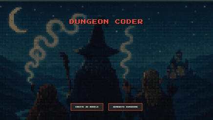
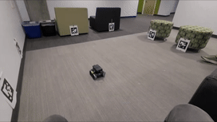
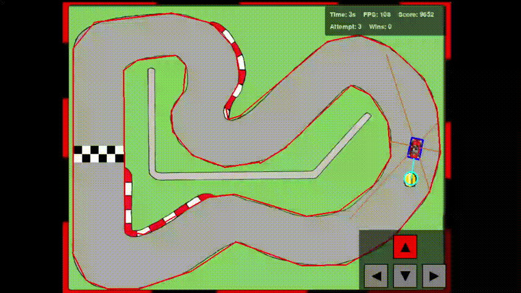
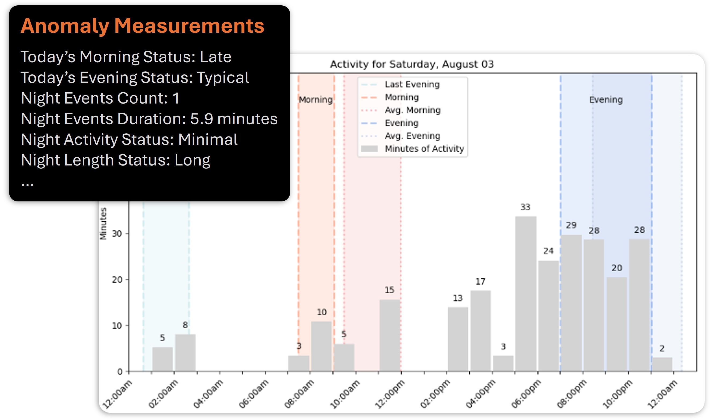
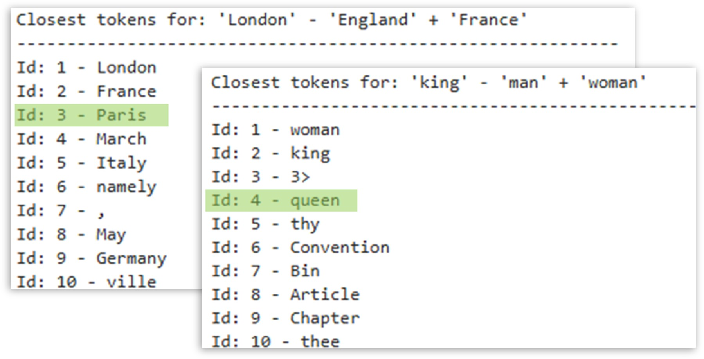

Professional
Built from scratch when necessary. Shipped cleanly when possible.
I like projects where the implementation details matter: benchmark environments you can actually ablate, interfaces people can use, or applied ML work where the messiness is the point rather than a bug in the pitch.
Selected Work
A few things I've actually built.

RL Systems
RL Benchmarking Gym
Built a clean, hackable RL gym engine from scratch to implement and ablate algorithms from baseline to state of the art.

Creative Tools
Dungeon Coder
A full-stack webapp that combines image generation, image-to-3D, and classical algorithms with LLM agents to generate custom dungeons and assets.

Robotics
SLAM-Based Autonomy for a 4-Wheel Rover
Developed an autonomy stack for an uncalibrated differential-drive rover, including vision, EKF-SLAM from scratch, and path planning.

Simulation
Reinforcement Learning Driver
Created and optimized a racing game in Pygame, then trained a Double Q-learning agent to drive it well enough to matter.

Applied ML
Machine Learning Anomaly Detection
Developed a real-time, interpretable anomaly detection system over noisy time-series data for a San Diego healthtech company.

NLP From Scratch
Recreating Word2Vec
Rebuilt Word2Vec vector arithmetic end to end, from tokenizer construction and Wikipedia cleaning through embedding training.
Writing
I write when I think something is worth explaining clearly.
Essay
Why Pivot?
Why I left finance, took a gap year to study ML, and decided to start grad school.
Essay
My Hours as an Investment Banking Analyst
I tracked the hours from both years in banking and turned them into a more honest picture than the recruiting brochures usually offer.
Technical
From Attention Is All You Need to Llama 3
A technical overview of what changed between the original transformer and the decoder-only models we use now.
Systems
Nvidia's Multi-Trillion Dollar Moat
A technically approachable explanation of why Nvidia's position is stronger than just "they make good chips."